MSIT capstone project
Dynamic CS Vocabulary Engine
An adaptive True/False vocabulary trainer for introductory computer science. A rule-based difficulty engine raises or lowers the level of the next question from how fast and how accurately the student answers.
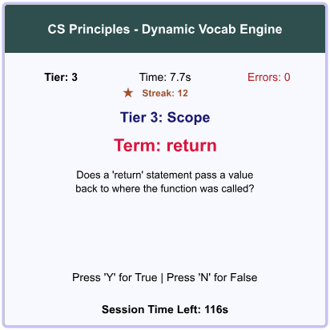
Highlights of release v0.4.1
Measured on 11 October 2026. Each number comes from a test log or result file in the repository.
- 80automated tests, all passing
- 100%of executable lines covered (184 of 184)
- 30 of 30planted faults caught by the tests
- 54.8 msmedian time from key press to new question
- 17 of 17system test cases passed in the browser
- 8 of 9requirements accepted
The problem
Students in a first programming course learn at very different rates. Fixed-difficulty practice, such as worksheets and quizzes that give everyone the same items in the same order, leaves beginners overwhelmed and advanced students bored. Many schools also use managed Chromebooks, so a practice tool cannot require any installation.
The solution
A single Python file, built with the CMU Graphics package, that runs in the free CMU CS Academy browser sandbox. It shows one programming term and one True/False question at a time. The student answers with the Y or N key, and a dynamic difficulty adjustment (DDA) engine moves them among three tiers of 23 terms. A session lasts three minutes and ends with a short report. Nothing is stored and no personal data is collected.
Demo
Screenshots from the recorded system test session in the CS Academy sandbox (Chrome on Windows). A short narrated demo video will be added after the final presentation.
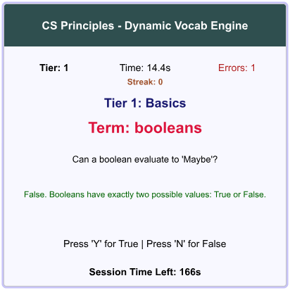
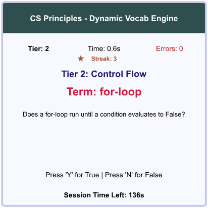
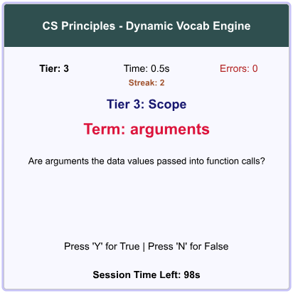
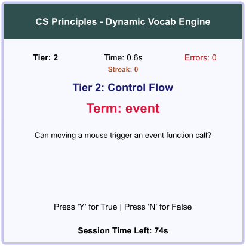
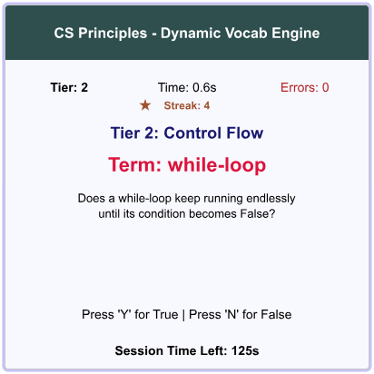
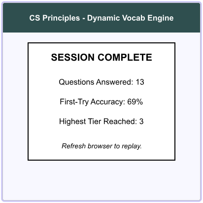
How it works
The program follows a layered architecture inside one file: an interface layer on the CMU Graphics canvas, an application logic layer with the session state and the DDA engine, and an in-memory data layer. The engine is a set of pure functions, so every rule can be tested outside the browser.
| Rule | Trigger | Result |
|---|---|---|
| Overload | Over 15 s, two wrong keys, or two first-try misses in a row | One tier down |
| Streak | Every third first-try answer in a row | One tier up |
| Flow | First-try answer in under 5 s | One tier up |
| Steady | Anything else | Tier held |
Tools
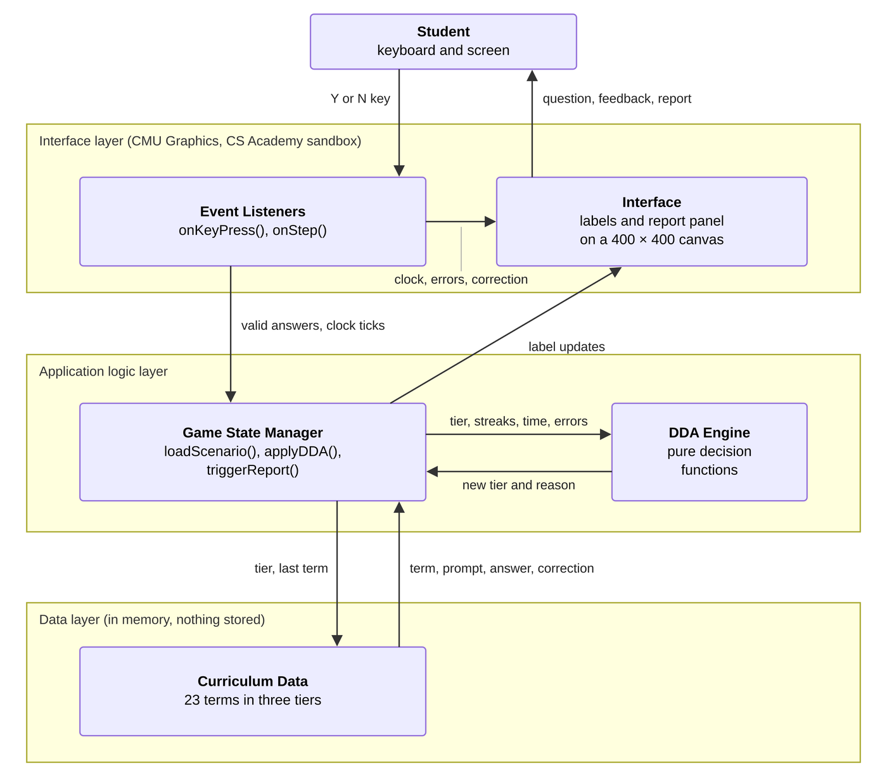
Development and release workflow
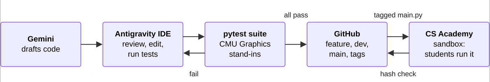
Testing and results
The system was tested at unit, integration, system, and acceptance level. Before the four usability defects found in evaluation were fixed, 11 of 19 new tests failed against the earlier release; all 80 tests pass on v0.4.1.
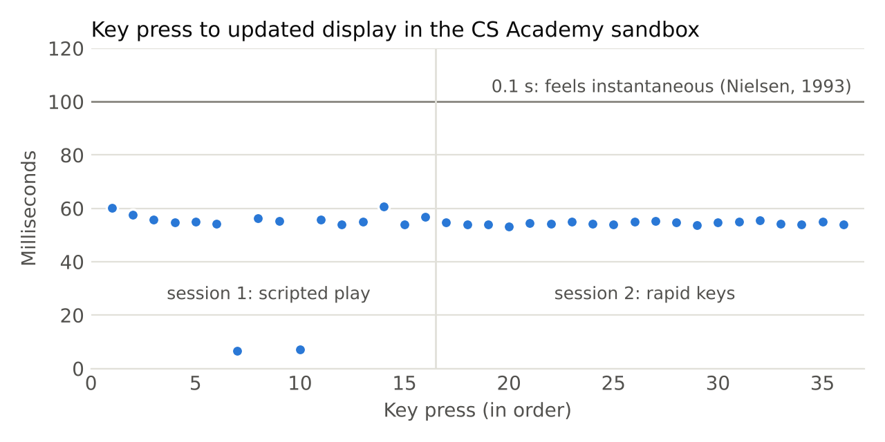
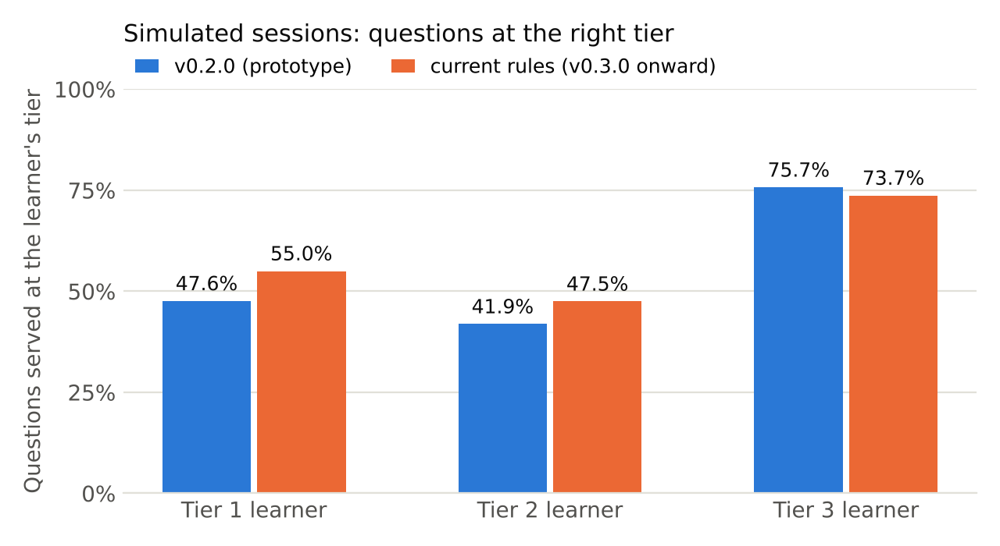
What the evaluation showed
Works as specified. The tests cover every executable line and caught all 30 deliberately planted faults. In the browser, a three-minute session ended within 0.09% of its length, and the on-screen report matched a hand tally.
Still to improve. The promotion rules react to single answers, so the tier still changes about six times a session. The teacher's manual override is not built yet, and the tool has not yet been tried with students.
Example: one of the fixes
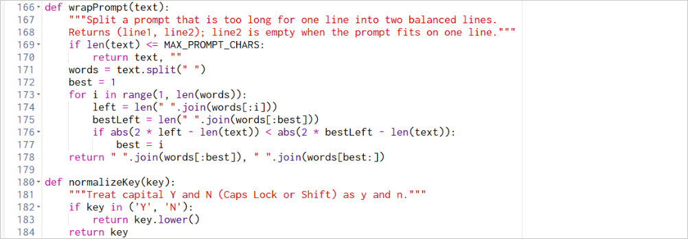
Documents and code
The full project lives in one public repository.
- Project report (PDF)Introduction, literature review, design, results, discussion, and conclusion.
- Source codemain.py, the complete application in one file.
- READMEHow to run, test, and release the project.
- Test plan and resultsTest levels, the 17 system test cases, and results.
- Maintenance planMaintenance types, schedule, change procedure, and risks.
- Test logsOutput of every test and evaluation run, including the failing runs.
- ChangelogWhat changed in each release.
- Automated testsUnit, integration, and usability tests with pytest.
Run it yourself
- Open the CMU CS Academy sandbox (a free account is needed).
- Paste the contents of
main.pyand press Run. - Press Y for True or N for False. A session lasts three minutes.
About me
I am Roger Rios, a Master of Science in Information Technology student at University of the People. This capstone brought together requirements analysis, software design, Python development, automated testing, continuous integration, and technical writing in one project aimed at a real classroom problem.
What I did
- Defined the problem and requirements from the literature on adaptive learning.
- Designed the layered architecture and the difficulty rules.
- Built and tested the application, with 80 automated tests and CI on GitHub.
- Evaluated performance, adaptation, and usability, and fixed the defects found.
- Wrote the test, deployment, and maintenance documentation.
Contact: github.com/Rios1024